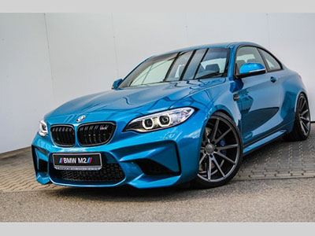
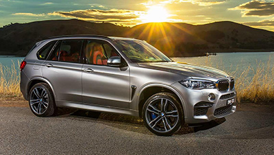

BMW M2

BMW M2 er den minste av alle M bilene og har overtatt for produksjonen av m1 coupe. Bilen ble først produsert sent i 2015.
M2 har 360 heste krefter og går fr a 0 til 100 på 4,4 sekunder og en toppfart på 250km/t. Denne bilen kommer til å koste deg rundt 850 000 ny.
BMW X5 M

BMW X5 er en av Verdens mest populære suver og har blitt laget siden 1999. Bilen finnes i blandt annet hybrid og i M-versjon. X5M koster fra nesten 2,2 millioner kroner til 2,5 millioner kroner.
X5M har Twin Power Turbo-teknologi til det høyeste nivået med biturbolading i tillegg, noe som gir V8-motoren på 4,4 liter en maksimal effekt på 575 hestekrefter. Den gjør også 0 til 100 på 4,2 sekunder. Toppfarten er på ca. 250km/t.